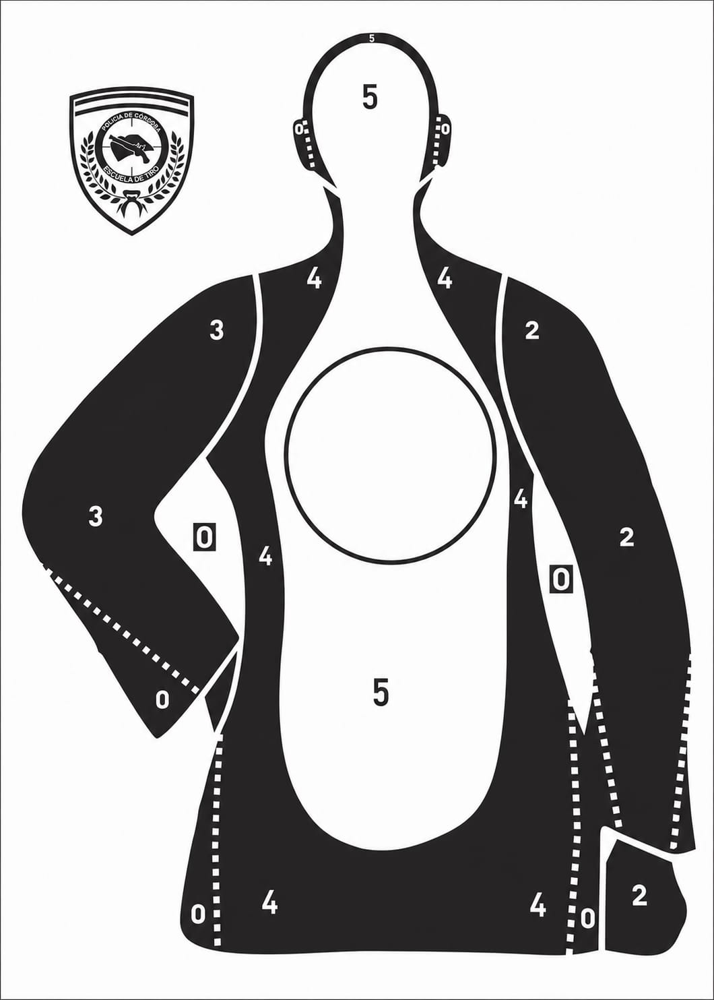

DIAGNÓSTICO DE TIRO
Análisis de distribución de impactos
MATERIAL DE CONSULTA
Errores de dispersión
Interpretación para tiradores zurdos
La rueda de referencia se invierte para la interpretación diagnóstica del tirador zurdo.
1 ↔ 5
2 ↔ 8
3 ↔ 7
4 ↔ 6
ANÁLISIS
Diagnóstico de tiro
DISPAROS
0
TIRADOR
DIESTRO

+ Toque la figura en la ubicación de cada disparo